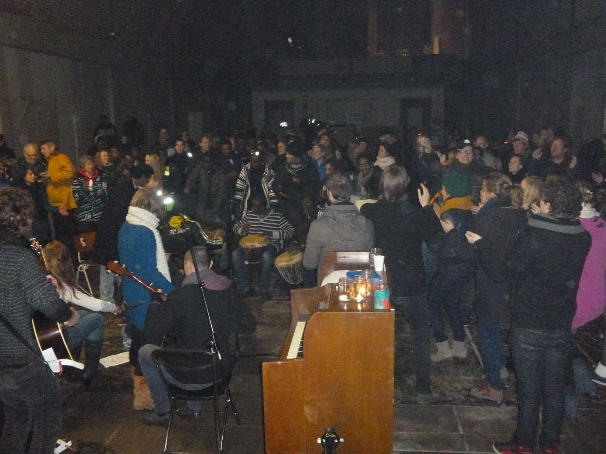

Projecten
Overig
WIJ ZIJN HIER
Although somewhere else now, we still exist…
During the eviction of Camp Osdorp om November 30th, all refugees were arrested. After sitting in a tight bus with lack of oxygen, for a long time (requests for water and painkillers were refused), they were taken to a police station in Amsterdam Zuid-Oost. The same evening most of them were 'released' - in other words put back on the street, in the cold, on a busstop. Eight members of the group were not released but deported or detained. Ever since volunteers (amongst who some VIA activists) try to re-establish / maintain contact with them.
After two days of panic about where to stay, an active squat group, squatted an empty church and asked the refugees to come and live there. Everyone was quite unsure that evening about what would happen. Suddenly the owner of the church appeared. He heard about the squat through the media. He was invited to a neighbouring squat for a talk. The atmosphere in the church was tense. When we received – bit by bit, through textmessages – the news that he would not press charches and then that he would even allow the refugees to stay for the whole winter, it was an amazing explosion of cheering and applauding. When the owner entered the church he was cheered loudly.
The Vluchtkerk gained a lot of media attention. It is great that the refugees from the group 'Wij zijn hier' found a shelter for the cold wintermonths. At the same time it is very important to notice that this is only a temporary relief of the problem. The main problem still exists. Therefore the demonstration (the way Wij Zijn Hier started) continues. For example at the court, when one of the detained refugees had its trial and at the Parliament, when the situation of the refugees was discussed.
These leople are humans, like every one of us, with their own dreams for their future. Most of these dreams are small - being able to study, to work, maybe raise a family, have a place to live. Non of these dreams can become reality though, as long as they don't have papers.
I met one of my good friends today in prison. While communicating in many different languages that we don't really speak well, I had to tell him that his appeal was rejected and he would not be released. I must say really my life changed after meeting this young, strong, active person with so much will to live and fight for his rights. After this news, though, I saw something disappearing in him. I think for me this has been one of the most emotional moments ever since I started to be involved with the people from 'Wij zijn hier'. He told me again: 'In my country of origin I am not accepted. I moved to the neighbouring country, where I was also not accepted. Then I fled to the Netherlands. Now I am in a prison.'
On Sunday 16th there was an open house in the Vluchtkerk. Some VIA volunteers helped. Here a small report.
We got a tour from one of the refugees who showed me:
- one the "bedrooms" where 7 of them sleep at the moment and luckily they just manage to put in place some sort of heating system
- the room where they held meeting/conferences about their situation, their countries (unfortunately for me in Dutch at that time)
- the "infirmary" a dump room underground where the doctor can come to
check the sick ones (luckily is empty at the moment).
Also:
- We had a place where people could write a letter to the 6 refugees that were arrested and still in prison. There was info on paper and in a presentation
- Nice music by the refugees on Jambee and by Chiraque on guitar ans vocals.
- More than 150 people from the neighbourhoud and other interested people came to visit.
- One of us coordinated the work to build the big christmas tree
- There was a dinner of soup and bread and things the visitors brought
- People had the chance to speak with refugees
- Many people were bringing stuff - we also brought some clothes / food
- the evening was quite amazing with music and singing and dancing. The refugees joined in with the band 'how to throw a christmas party' that also played in front of 'kamp Zeist' that afternoon, where most of the prisoners are located.
Follow the news on our Facebookpage (www.facebook.com/pages/Stichting-VIA/126805867422368?ref=ts&fref=ts) or on www.devluchtkerk.nl